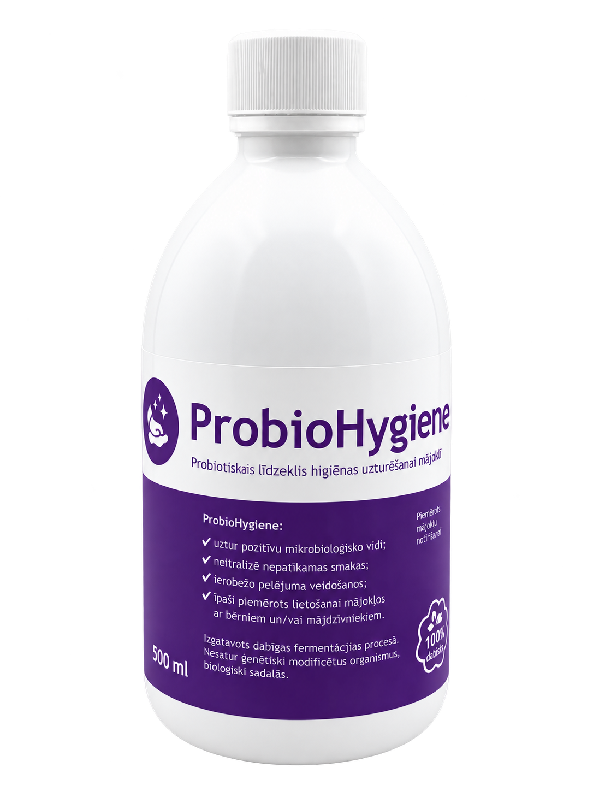

Kuo rūpinatės
šiandien?Pradėkite nuo savo poreikio. |
|
|
Tinkamas produktas prasideda nuo jūsų poreikio.Štai trys situacijos, kuriose gali praversti mūsų produktai. Pasirinkite artimiausią jums. |
|
01 AUGINTINIUI Norite papildyti augintinio mitybą? |
 | ExtraPetFermentuotų augalų ekstrakto papildas augintinio kasdienei mitybai. |
|
Kaip pradėti?
Dienos dozę galima įmaišyti į maistą arba geriamąjį vandenį. Kiekį rinkitės pagal augintinio svorį ir produkto instrukciją. |
|
|
02 NAMAMS Rūpinatės paviršių švara ir kvapais? |
 | ProbioHygieneProbiotinė priemonė namų paviršių priežiūrai ir nemaloniems kvapams mažinti. |
|
Kaip pradėti?
Pirmiausia pasirinkite prižiūrimą vietą. Naudojimo būdą ir skiedimą pasitikrinkite konkretaus produkto instrukcijoje. |
|
|
03 SODUI IR ŪKIUI Kompostuojate organines atliekas? |
 | ProbioHumusProduktas kompostavimo procesui ir dirvožemio mikroflorai bei struktūrai gerinti. |
|
Kaip pradėti?
Kompostavimui preparatas skiedžiamas vandeniu ir tolygiai paskirstomas substrate. Skiedimas priklauso nuo jo drėgnumo. |
|
|
Prieš pirmą naudojimą01 Pasitikrinkite paskirtį.
Gyvūnų mitybai ir aplinkos priežiūrai skirti skirtingi produktai. 02 Laikykitės instrukcijos.
Dozavimas ir skiedimas nėra vienodi visiems produktams. 03 Jei abejojate, parašykite.
Papasakokite, kam ieškote produkto: info@probiotikai.com. |
|
| JŪSŲ PASIRINKIMUI |
| −15 % |
| nuolaida su kodu |
|
|
|
| Kodą įveskite pirkinių krepšelyje. |
Linkime atrasti tai, kas pravers jums.
„Baltic Probiotics“ komanda |
|
| probiotikai.com |
| Facebook · Kontaktai · +370 670 07075 |
Gavote šį laišką, nes užsiprenumeravote mūsų naujienas.
SIA Baltic Probiotics · Ceptuve, Rucavas pagasts,
Dienvidkurzemes novads, LV-3477
Privatumo politika · Atsisakyti naujienlaiškių |